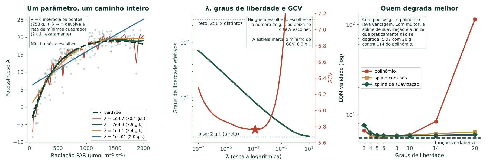
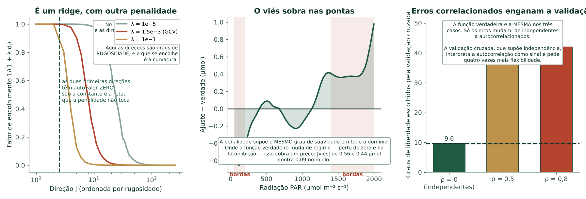

Smoothing splines
Põe um nó em cada observação e penaliza a curvatura — o problema de escolher nós desaparece e sobra um único parâmetro contínuo.
Comece por aqui
A ficha anterior deixou um problema em aberto: quantos nós, e onde? A spline de suavização responde da maneira mais radical possível — põe um nó em cada observação e, para impedir que o ajuste interpole os pontos, acrescenta ao critério uma penalidade sobre a curvatura. O problema de escolher nós desaparece, e sobra um único parâmetro contínuo.
Entre todas as funções duas vezes diferenciáveis — não só entre as splines — a que minimiza \(\sum(y_i-f(x_i))^2+\lambda\int f''(t)^2\,dt\) é uma spline cúbica natural com nós nos \(x\) distintos. Reinsch (1967) demonstrou isso, e é um resultado notável: a forma da solução não foi escolhida, foi deduzida do critério. Não se está supondo que a resposta seja uma spline; está-se descobrindo que ela é.
O que é a spline de suavização
O critério tem dois termos que puxam em direções opostas. O primeiro quer passar por todos os pontos; o segundo cobra por cada unidade de curvatura acumulada ao longo do domínio. O parâmetro \(\lambda\) arbitra entre eles.

Os dois extremos, verificados numericamente
| Limite | Graus de liberdade efetivos | O que o ajuste é |
|---|---|---|
| \(\lambda\to0\) | 257,95 (há 258 x distintos) | interpola as médias por x; diferença máxima 0,05 |
| \(\lambda\to\infty\) | 2,0000 | a reta de mínimos quadrados; diferença máxima 1,5 × 10⁻⁶ |
Entre os dois extremos há um caminho contínuo. É a mesma estrutura do ridge, do lasso, da PCR e da PLS: um caminho do modelo nulo ao ajuste saturado, com um parâmetro escolhendo o ponto.
Pressupostos e como verificá-los
| Pressuposto | Por que importa | Como verificar |
|---|---|---|
| Erros independentes | A validação cruzada e o GCV supõem isso. | É o pressuposto mais violado; veja a simulação desta ficha. |
| Variância do erro constante | A penalidade é uniforme no domínio. | Resíduos contra ajustados; ou use pesos. |
| Suavidade homogênea no domínio | A penalidade é a mesma em toda parte. | Examine o resíduo por região. |
| λ escolhido por GCV ou validação | Não há valor universal. | smooth.spline faz por padrão. |
| λ reescolhido dentro de cada dobra ao avaliar | Fixá-lo na amostra inteira é otimista. | Validação cruzada aninhada. |
| x com variação suficiente | Com x quase constante a penalidade domina. | Examine a distribuição de x. |
| Nenhuma extrapolação | Fora do domínio a spline natural vira reta. | Confira o intervalo de newdata. |
| n não muito grande, ou nknots ligado | Há um nó por ponto distinto. | O R liga nknots automaticamente para n grande. |
A validação cruzada e o GCV supõem que os erros são independentes. Quando não são, a autocorrelação parece sinal, e o critério pede mais flexibilidade para persegui-la. A simulação desta ficha mantém a função verdadeira fixa e varia apenas a estrutura do erro: com \(\rho=0\) a validação escolhe 9,6 graus de liberdade; com \(\rho=0{,}5\), 37,4; com \(\rho=0{,}8\), 42,0. O ajuste resultante parece cheio de estrutura, e não há nenhuma. Em séries temporais e em dados espaciais, isso é a regra, não a exceção.
Formulação e cálculo
Em que:
- \(\mathcal{C}^{2}\)
- o conjunto de todas as funções duas vezes diferenciáveis
- \(\lambda\)
- parâmetro de suavização, \(\lambda\ge0\)
- \(\int[f'']^{2}\)
- a rugosidade acumulada da função
- \([a,b]\)
- o intervalo dos dados
A solução, em forma matricial
Sejam \(x_1<\dots<x_m\) os valores distintos e \(h_i=x_{i+1}-x_i\). Constroem-se \(Q\) (de ordem \(m\times(m-2)\)) e \(R\) (tridiagonal, \((m-2)\times(m-2)\)) a partir dos \(h_i\), e define-se \(K=QR^{-1}Q^{\top}\). Então:
Em que:
- \(W\)
- matriz diagonal com o número de repetições de cada \(x\)
- \(K\)
- matriz de rugosidade, que depende só dos \(x\)
- \(S_\lambda\)
- a matriz suavizadora: o ajuste é LINEAR em y
- \(\operatorname{tr}(S_\lambda)\)
- os graus de liberdade efetivos
Na prática não se inverte \(W+\lambda K\): o algoritmo de Reinsch resolve o sistema bandado \((R+\lambda Q^{\top}W^{-1}Q)\gamma=Q^{\top}\bar y\) e obtém \(\hat f=\bar y-\lambda W^{-1}Q\gamma\). É \(O(n)\) e muito mais estável.
O critério de escolha
O GCV é a validação cruzada deixa-um-de-fora com cada elemento da diagonal de \(S_\lambda\) trocado pela média deles — o que o torna calculável a partir de um único ajuste.
Exemplo numérico, passo a passo
| λ | g.l. efetivos | EQM 10-fold | VC deixa-um-de-fora | GCV |
|---|---|---|---|---|
| 10⁻⁷ | 70,43 | 6,8445 | 10,7842 | 6,2766 |
| 8 × 10⁻⁷ | 44,40 | 6,4525 | 6,9106 | 5,9803 |
| 3 × 10⁻⁶ | 33,39 | 6,2449 | 6,2159 | 5,9010 |
| 10⁻⁵ | 25,07 | 6,0579 | 5,9754 | 5,8585 |
| 4 × 10⁻⁵ | 18,75 | 5,9331 | 5,8662 | 5,8170 |
| 8 × 10⁻⁵ | 15,44 | 5,8823 | 5,8294 | 5,7917 |
| 3 × 10⁻⁴ | 11,56 | 5,8447 | 5,8121 | 5,7720 |
| 1,5 × 10⁻³ | 7,93 | 5,8237 | 5,8096 | 5,7638 |
| 8 × 10⁻³ | 5,54 | 5,8735 | 5,8665 | 5,8175 |
| 10⁻¹ | 3,43 | 6,6841 | 6,6261 | 6,5744 |
Os três critérios têm mínimo na mesma vizinhança, e o GCV e a validação cruzada de 10 dobras escolhem exatamente o mesmo \(\lambda=1{,}52\times10^{-3}\), com 7,93 graus de liberdade.
A matriz \(K\) de rugosidade tem autovalores \(d_1\le d_2\le\dots\le d_m\), e o ajuste encolhe cada direção própria pelo fator \(1/(1+\lambda d_j)\). Nos dados desta ficha:
| Direção j | \(d_j\) | Fator \(1/(1+\lambda d_j)\) |
|---|---|---|
| 1 | −6,6 × 10⁻⁵ (zero numérico) | 1,000000 |
| 2 | −1,2 × 10⁻⁵ (zero numérico) | 1,000000 |
| 3 | 2,436 | 0,999756 |
| 4 | 15,90 | 0,998412 |
| 6 | 177,5 | 0,982563 |
| 11 | 3 668 | 0,731643 |
| 31 | 3,86 × 10⁵ | 0,025250 |
| 101 | 6,72 × 10⁷ | 0,000149 |
| 258 | 1,43 × 10¹³ | 0,000000 |
Os dois primeiros autovalores são nulos — saem como \(10^{-5}\) contra \(10^{13}\) do maior, dezoito ordens de grandeza abaixo, que é o zero numérico desta matriz. Eles correspondem às direções constante e linear, cuja segunda derivada é zero e que a penalidade portanto não toca. É exatamente por isso que os graus de liberdade efetivos nunca descem abaixo de 2.
A estrutura é a mesma do ridge: cada direção própria é multiplicada por um fator entre 0 e 1, e \(\lambda\) controla quais sobrevivem. A diferença é qual decomposição se usa — no ridge, as componentes principais de \(X\), ordenadas por variância; aqui, graus de rugosidade, ordenados por quanto oscilam. A penalidade cobra pela curvatura em vez de pelo tamanho do coeficiente, e é só isso que muda.
Propriedades
- A solução é uma spline cúbica NATURAL com nós nos \(x\) distintos — deduzida, não suposta.
- O ajuste é linear em \(y\): \(\hat f=S_\lambda y\), com \(S_\lambda\) dependendo só dos \(x\) e de \(\lambda\).
- Os graus de liberdade efetivos são \(\operatorname{tr}(S_\lambda)\), entre 2 e \(m\).
- \(\lambda\to0\) interpola; \(\lambda\to\infty\) devolve a reta de mínimos quadrados, exatamente.
- É uma regressão penalizada: encolhe cada direção de rugosidade por \(1/(1+\lambda d_j)\).
- Os dois menores autovalores de \(K\) são nulos: a constante e a reta não são penalizadas.
- O GCV aproxima a deixa-um-de-fora ao custo de um único ajuste.
- Fora do domínio é LINEAR, por ser natural: a extrapolação é controlada.
Como interpretar os resultados
| Elemento | O que informa | Cuidado |
|---|---|---|
$df | Graus de liberdade efetivos. | É a quantidade interpretável, não λ. |
$lambda | O parâmetro de penalidade. | Depende da escala de x; não é comparável entre variáveis. |
$spar | Reparametrização de λ usada pelo R. | Varia tipicamente entre 0 e 1,5. |
$cv.crit | O valor do GCV ou da VC. | Útil para comparar λ, não modelos diferentes. |
$crit ao longo de spar | A curva de escolha. | Costuma ser rasa; veja abaixo. |
| O gráfico do ajuste | A forma estimada. | É o que se publica. |
| Resíduo por região | Onde a suavidade uniforme não serve. | Veja a tabela de viés desta ficha. |
Por que se reporta df e não λ
O \(\lambda\) depende da escala de \(x\): dividir o PAR por mil muda \(\lambda\) por um fator de \(10^9\) sem mudar o ajuste. Os graus de liberdade efetivos, ao contrário, são invariantes e interpretáveis na mesma escala de qualquer outro modelo — "esta curva usa 7,9 graus de liberdade" é comparável a "este polinômio usa 6". É por isso que o smooth.spline aceita o argumento df e que toda a literatura reporta \(\operatorname{tr}(S)\).
Trocou-se um problema por outro: em vez de escolher quantos nós e onde, escolhe-se \(\lambda\). A escolha continua existindo, continua tendo de ser validada, e continua sendo uma escolha de modelo que invalida os valores-p do ajuste final se for feita olhando os dados. O ganho é real — um parâmetro contínuo é mais fácil de varrer que um conjunto de posições — mas não é mágica.
Como executar no R e em Python
Onde executar o código em Python
Não é preciso instalar nada: o Google Colab é um computador na nuvem, gratuito, que executa Python pelo navegador e já traz as bibliotecas usadas aqui (numpy, scipy e matplotlib).
smooth.spline(x, y) do R base faz tudo, e por padrão escolhe \(\lambda\) por GCV. Três formas de controlar a suavidade: df = 8 fixa os graus de liberdade efetivos e é a mais interpretável; spar dá a reparametrização interna, tipicamente entre 0 e 1,5; lambda dá o valor bruto, que depende da escala e raramente se usa. cv = TRUE troca o GCV pela deixa-um-de-fora exata. O objeto devolvido traz $df, $lambda, $spar e $cv.crit, e predict(m, xnovo) avalia em pontos novos — com deriv = 1 ou 2 para as derivadas, o que é útil quando o interesse é o ponto de máximo ou a inflexão.
Com \(n\) grande o R liga automaticamente o argumento nknots, usando cerca de 50 nós em vez de um por ponto. O resultado é praticamente idêntico e o custo cai muito; convém saber que isso acontece.
m <- smooth.spline(fot$par, fot$A) # lambda por GCV
m$df; m$lambda; m$spar
plot(A ~ par, data = fot, pch = 16, col = "#8aa59680")
lines(m, col = "#1f5b43", lwd = 3)
smooth.spline(fot$par, fot$A, df = 8) # g.l. fixados
smooth.spline(fot$par, fot$A, cv = TRUE) # deixa-um-de-fora exata
Exemplo de aplicação
Contexto dos dados
Os dados são fictícios e foram criados pelo autor: 260 medições de trocas gasosas em folhas de cafeeiro. A resposta é a fotossíntese líquida \(A\) (μmol CO₂ m⁻² s⁻¹) e as três preditoras são a radiação PAR (μmol m⁻² s⁻¹, de 57 a 1.998), a temperatura foliar (°C, de 11,3 a 38,3) e o déficit de pressão de vapor VPD (kPa, de 0,30 a 2,45). O processo gerador é conhecido: \(A=\alpha+f_1(\text{PAR})+f_2(\text{temp})+f_3(\text{VPD})+\varepsilon\), com erro de desvio-padrão 1,30. A curva de luz \(f_1\) sobe depressa, satura e cai um pouco por fotoinibição acima de 1.000 μmol; \(f_2\) tem ótimo em 27 °C; \(f_3\) é um declínio convexo. Saber as funções verdadeiras permite medir o viés de cada método — o que, em dados reais, nunca é possível. O mesmo conjunto atravessa as cinco fichas do grupo.
Código em R
# Splines de suavização: exemplo completo ----
# Pacotes: nenhum (smooth.spline é do R base)
# Dados fictícios: 260 medições de trocas gasosas em folhas de cafeeiro.
# O arquivo fotossintese.csv acompanha o site, na pasta scripts/.
fot <- read.csv("fotossintese.csv")
str(fot) # A (umol CO2 m-2 s-1), par, temp, vpd
summary(fot)
plot(A ~ par, data = fot, pch = 16, col = "#8aa59680",
xlab = "PAR (umol m-2 s-1)", ylab = "A (umol CO2 m-2 s-1)")
# O ponto de partida: quanto o modelo LINEAR deixa na mesa
summary(lm(A ~ par + temp + vpd, data = fot))$r.squared # 0,6747
# O processo gerador verdadeiro daria R² = 0,9514. É esse buraco que o
# grupo inteiro de fichas tenta preencher.
# ---- 1. OS DOIS EXTREMOS
# lambda -> 0 interpola; lambda -> infinito devolve a reta de minimos quadrados.
s0 <- smooth.spline(fot$par, fot$A, spar = -1.5) # quase interpolacao
sI <- smooth.spline(fot$par, fot$A, spar = 2.5) # quase reta
c(gl_minimo = sI$df, gl_maximo = s0$df, x_distintos = length(unique(fot$par)))
# compare o ajuste com spar alto a reta de minimos quadrados:
max(abs(predict(sI, fot$par)$y - fitted(lm(A ~ par, data = fot))))
# ---- 2. A ESCOLHA DA SUAVIDADE
# Tres caminhos: dar os g.l., deixar o GCV escolher, ou a validacao cruzada.
sg <- smooth.spline(fot$par, fot$A) # GCV, o padrao
sg$df; sg$lambda; sg$spar
sc <- smooth.spline(fot$par, fot$A, cv = TRUE) # deixa-um-de-fora
sc$df
s8 <- smooth.spline(fot$par, fot$A, df = 8) # g.l. fixados
s8$lambda
# a curva de g.l. contra lambda
for (sp in seq(0, 1.4, by = 0.2)) {
m <- smooth.spline(fot$par, fot$A, spar = sp)
cat(sprintf("spar %.1f: lambda %.3e, g.l. %.2f\n", sp, m$lambda, m$df))
}
# ---- 3. O ajuste, com os pontos
plot(A ~ par, data = fot, pch = 16, col = "#8aa59680",
xlab = "PAR (umol m-2 s-1)", ylab = "A (umol CO2 m-2 s-1)")
lines(sg, col = "#1f5b43", lwd = 3)
lines(smooth.spline(fot$par, fot$A, df = 25), col = "#b5442f", lwd = 2)
lines(smooth.spline(fot$par, fot$A, df = 3), col = "#bf924c", lwd = 2)
# ---- 4. A LIGAÇÃO COM O RIDGE
# O ajuste e LINEAR em y: f = S_lambda y, e os g.l. efetivos sao tr(S).
# Na base natural com nos em todos os x, S = (W + lambda K)^-1 W, com K
# fixa. Trocar K pela identidade da exatamente o ridge. Os DOIS menores
# autovalores de K sao zero: sao a constante e a reta, que a penalidade
# nao toca - e por isso os g.l. nunca descem abaixo de 2.
# ---- 5. COMPARAÇÃO COM AS DUAS FICHAS ANTERIORES
library(splines); library(boot)
set.seed(1)
for (gl in c(3, 4, 5, 6, 8, 10, 14, 20)) {
g <- gl - 1; K <- gl - 4
e1 <- cv.glm(fot, glm(A ~ poly(par, g), data = fot), K = 10)$delta[1]
e2 <- if (K >= 0) {
nos <- quantile(fot$par, probs = seq(0, 1, length.out = K + 2)[-c(1, K + 2)])
f <- as.formula(sprintf("A ~ bs(par, knots = c(%s))", paste(round(nos, 4), collapse = ", ")))
cv.glm(fot, glm(f, data = fot), K = 10)$delta[1] } else NA
# validacao cruzada manual para a spline de suavizacao
d <- sample(rep(1:10, length.out = nrow(fot))); er <- numeric(nrow(fot))
for (j in 1:10) {
m <- smooth.spline(fot$par[d != j], fot$A[d != j], df = gl)
er[d == j] <- fot$A[d == j] - predict(m, fot$par[d == j])$y }
cat(sprintf("%2d g.l.: polinomio %7.4f | spline c/ nos %7s | suavizacao %7.4f\n",
gl, e1, ifelse(is.na(e2), "-", sprintf("%.4f", e2)), mean(er^2)))
}
# ---- 6. ERROS CORRELACIONADOS ENGANAM A VALIDAÇÃO
set.seed(5)
for (rho in c(0, 0.5, 0.8)) {
gl <- replicate(30, {
e <- numeric(nrow(fot))
for (i in 2:nrow(fot)) e[i] <- rho*e[i-1] + rnorm(1, 0, 1.3*sqrt(1 - rho^2))
yy <- 26*(1 - exp(-0.0024*sort(fot$par))) -
1.9e-6*pmax(sort(fot$par) - 1000, 0)^2 + e
smooth.spline(sort(fot$par), yy)$df })
cat(sprintf("rho = %.1f: g.l. escolhidos pelo GCV = %.2f\n", rho, mean(gl)))
}
# A funcao verdadeira e a MESMA nos tres casos. So os erros mudam.
A mesma análise em Python, com os resultados
Cole o código em um notebook do Google Colab ↗ e execute com Shift+Enter. Os valores abaixo são a saída desse código.
import numpy as np
# ------------------------------------------------------------------
# Bloco comum às fichas deste grupo: funções auxiliares e dados (cab15)
# ------------------------------------------------------------------
import numpy as np
# ------------------------------------------------------------------
# Bloco comum às fichas deste grupo: funções auxiliares e dados (dados15)
# ------------------------------------------------------------------
import numpy as np
import pandas as pd
def le_csv(nome):
"""Lê o arquivo de dados da ficha: primeiro na pasta atual; se não
estiver lá (por exemplo, no Google Colab), direto do site."""
try:
return pd.read_csv(nome)
except FileNotFoundError:
return pd.read_csv('https://cassiushenrique.github.io/ModelosEstatisticos/scripts/' + nome)
# Dados fictícios: 260 medições de trocas gasosas (arquivo fotossintese.csv)
fot = le_csv('fotossintese.csv')
PAR=fot['par'].to_numpy(float); TEMP=fot['temp'].to_numpy(float)
VPD=fot['vpd'].to_numpy(float); A=fot['A'].to_numpy(float)
NG=len(A)
SIG=1.30
INT=14.0
def f_par(x):
x=np.asarray(x,float)
return 26.0*(1-np.exp(-0.0024*x))-1.9e-6*np.maximum(x-1000,0)**2
def f_temp(t): t=np.asarray(t,float); return -0.042*(t-27.0)**2
def f_vpd(v): v=np.asarray(v,float); return -2.9*v+0.33*v**2
C1=19.9605909253; C2=-1.4311050277; C3=-2.0245067433
def verdade(x,t,v): return INT+(f_par(x)-C1)+(f_temp(t)-C2)+(f_vpd(v)-C3)
# ------------------------------------------------------------------ fim do bloco comum
# ------------------------------------------------------------------ utilidades
def c(v, d=4): return ('%.*f' % (d, v)).replace('.', ',')
def eqm(o, p): return float(np.mean((np.asarray(o) - np.asarray(p))**2))
def sqr(o, p): return float(np.sum((np.asarray(o) - np.asarray(p))**2))
def r2(o, p): return 1 - sqr(o, p)/float(np.sum((np.asarray(o) - np.mean(o))**2))
def dobras(n, k, seed):
rg = np.random.default_rng(seed)
d = np.tile(np.arange(k), int(np.ceil(n/k)))[:n]; rg.shuffle(d); return d
def cv_uni(ajusta, x, y, k=10, seed=0, reps=1):
"""EQM por validação cruzada para um suavizador univariado.
ajusta(xtr, ytr, xte) -> predições em xte."""
tot = []
for r in range(reps):
d = dobras(len(y), k, seed + 991*r); e = np.empty(len(y))
for j in range(k):
tr, te = d != j, d == j
e[te] = y[te] - ajusta(x[tr], y[tr], x[te])
tot.append(float(np.mean(e**2)))
return float(np.mean(tot)), (float(np.std(tot, ddof=1)) if reps > 1 else 0.0)
# ------------------------------------------------------------------ polinômios
def poli(x, g, xr=None):
"""Base polinomial ORTOGONAL (Legendre reescalada ao intervalo de xr)."""
x = np.asarray(x, float); xr = x if xr is None else np.asarray(xr, float)
a, b = xr.min(), xr.max()
z = 2*(x - a)/(b - a) - 1
return np.polynomial.legendre.legvander(z, g)
def poli_cru(x, g):
x = np.asarray(x, float)
return np.column_stack([x**j for j in range(g+1)])
# ------------------------------------------------------------------ B-splines
def bspline(x, nos, grau=3):
"""Base B-spline por Cox-de Boor. 'nos' = vetor de nós INTERNOS."""
x = np.asarray(x, float); nos = np.asarray(nos, float)
a, b = bspline.lim
t = np.concatenate([[a]*(grau+1), nos, [b]*(grau+1)])
m = len(t) - grau - 1
B = np.zeros((len(x), m))
for i in range(m):
B[:, i] = (x >= t[i]) & (x < t[i+1])
B[np.isclose(x, b), m-1] = 1.0
for d in range(1, grau+1):
Bn = np.zeros((len(x), len(t) - d - 1))
for i in range(Bn.shape[1]):
den1 = t[i+d] - t[i]; den2 = t[i+d+1] - t[i+1]
a1 = (x - t[i])/den1*B[:, i] if den1 > 0 else 0.0
a2 = (t[i+d+1] - x)/den2*B[:, i+1] if den2 > 0 else 0.0
Bn[:, i] = a1 + a2
B = Bn
return B
def base_bs(x, nos, grau=3, lim=None):
bspline.lim = lim if lim is not None else (float(np.min(x)), float(np.max(x)))
return bspline(x, nos, grau)
def trunc_pot(x, nos, grau=3):
"""Base de potências truncadas: 1, x, ..., x^g, (x-k)_+^g."""
x = np.asarray(x, float)
cols = [x**j for j in range(grau+1)]
for k in np.asarray(nos, float):
cols.append(np.maximum(x - k, 0.0)**grau)
return np.column_stack(cols)
def natural_cs(x, nos, lim):
"""Base de spline cúbica NATURAL (linear fora dos nós de fronteira)."""
x = np.asarray(x, float); K = np.concatenate([[lim[0]], np.asarray(nos, float), [lim[1]]])
k = len(K)
def d(j):
return (np.maximum(x - K[j], 0)**3 - np.maximum(x - K[k-1], 0)**3)/(K[k-1] - K[j])
cols = [np.ones_like(x), x] + [d(j) - d(k-2) for j in range(k-2)]
return np.column_stack(cols)
def ajusta_base(B, y):
return np.linalg.lstsq(B, y, rcond=None)[0]
# --------------------------------------------------- spline de suavização
def suav_spline(x, y, lam, escala=True):
"""Spline cúbica de suavização EXATA, pelo algoritmo de Reinsch
(Green e Silverman, 1994, cap. 2). Resolve o sistema BANDADO
(R + lam Q' W^-1 Q) gama = Q' ybar , ajustado = ybar - lam W^-1 Q gama
que é numericamente muito mais estável que inverter (W + lam K).
Com escala=True, x é levado a [0, 1] antes de penalizar, de modo que lambda
tenha o mesmo significado para variáveis de unidades diferentes — é o que o
smooth.spline faz por trás do argumento spar.
Devolve (ajustados, x únicos na escala original, contagens, médias, g.l. efetivos)."""
x = np.asarray(x, float); y = np.asarray(y, float)
a0, b0 = (x.min(), x.max()) if escala else (0.0, 1.0)
xs = (x - a0)/(b0 - a0) if escala else x
xo_s, inv = np.unique(np.round(xs, 12), return_inverse=True)
m = len(xo_s)
xo = xo_s*(b0 - a0) + a0 if escala else xo_s
cont = np.bincount(inv, minlength=m).astype(float)
ybar = np.bincount(inv, weights=y, minlength=m)/cont
h = np.diff(xo_s)
Q = np.zeros((m, m-2)); R = np.zeros((m-2, m-2))
for j in range(1, m-1):
Q[j-1, j-1] = 1/h[j-1]; Q[j, j-1] = -1/h[j-1] - 1/h[j]; Q[j+1, j-1] = 1/h[j]
R[j-1, j-1] = (h[j-1] + h[j])/3
if j < m-2:
R[j-1, j] = h[j]/6; R[j, j-1] = h[j]/6
Winv = 1.0/cont
M = R + lam*(Q.T*Winv) @ Q
gama = np.linalg.solve(M, Q.T @ ybar)
aj = ybar - lam*Winv*(Q @ gama)
# g.l. efetivos = tr(S) = m - lam * tr( W^-1 Q M^-1 Q' )
tr = m - lam*float(np.sum(Winv*np.einsum('ij,ji->i', Q, np.linalg.solve(M, Q.T))))
return aj, xo, cont, ybar, tr
def ss_edf(x, lam):
return suav_spline(x, np.zeros(len(x)), lam)[4]
def ss_gcv(x, y, lam):
aj, xo, cont, ybar, tr = suav_spline(x, y, lam)
n = len(y)
res = np.asarray(y, float) - np.interp(x, xo, aj)
return float(np.sum(res**2)/n)/((1 - tr/n)**2), tr
def ss_prev(x, y, lam, xnovo):
aj, xo, cont, ybar, tr = suav_spline(x, y, lam)
# extrapolação LINEAR fora do domínio, como manda a spline natural
d0 = (aj[1]-aj[0])/(xo[1]-xo[0]); d1 = (aj[-1]-aj[-2])/(xo[-1]-xo[-2])
xn = np.asarray(xnovo, float); out = np.interp(xn, xo, aj)
out = np.where(xn < xo[0], aj[0] + d0*(xn - xo[0]), out)
out = np.where(xn > xo[-1], aj[-1] + d1*(xn - xo[-1]), out)
return out
# ------------------------------------------------------------------ LOESS
def tricubo(u): return (1 - np.abs(u)**3)**3
def loess(x, y, xnovo, span=0.35, grau=1, iteracoes=0):
"""Regressão local ponderada (Cleveland, 1979).
iteracoes > 0 ativa a reponderação robusta bisquare: os pesos de robustez
são sempre calculados a partir dos resíduos NOS PONTOS DE AJUSTE x, e não
nos pontos onde se quer prever."""
x = np.asarray(x, float); y = np.asarray(y, float); xn = np.asarray(xnovo, float)
n = len(x); q = max(grau + 2, int(np.ceil(span*n)))
def ajusta_em(alvos, rob):
out = np.empty(len(alvos))
for i, x0 in enumerate(alvos):
dd = np.abs(x - x0); ord_ = np.argsort(dd); viz = ord_[:q]
dmax = dd[viz[-1]]
w = tricubo(dd[viz]/dmax) if dmax > 0 else np.ones(q)
w = w*rob[viz]
Z = np.column_stack([(x[viz] - x0)**j for j in range(grau+1)])
WZ = Z*w[:, None]
try: b = np.linalg.solve(Z.T @ WZ, WZ.T @ y[viz])
except np.linalg.LinAlgError: b = np.linalg.lstsq(Z.T @ WZ, WZ.T @ y[viz], rcond=None)[0]
out[i] = b[0]
return out
rob = np.ones(n)
for _ in range(iteracoes):
aj = ajusta_em(x, rob) # SEMPRE nos x de ajuste
res = y - aj
s = np.median(np.abs(res))
rob = np.clip(1 - (res/(6*s))**2, 0, None)**2 if s > 0 else np.ones(n)
return ajusta_em(xn, rob)
def loess_edf(x, span=0.35, grau=1):
"""Graus de liberdade efetivos: traço da matriz suavizadora."""
x = np.asarray(x, float); n = len(x); q = max(grau + 2, int(np.ceil(span*n)))
tr = 0.0
for i, x0 in enumerate(x):
dd = np.abs(x - x0); ord_ = np.argsort(dd); viz = ord_[:q]
dmax = dd[viz[-1]]
w = tricubo(dd[viz]/dmax) if dmax > 0 else np.ones(q)
Z = np.column_stack([(x[viz] - x0)**j for j in range(grau+1)])
WZ = Z*w[:, None]
try: li = np.linalg.solve(Z.T @ WZ, WZ.T)
except np.linalg.LinAlgError: li = np.linalg.lstsq(Z.T @ WZ, WZ.T, rcond=None)[0]
k = np.where(viz == i)[0]
if len(k): tr += li[0, k[0]]
return tr
# ------------------------------------------------------------------ GAM
def gam_backfit(Xs, y, suav, it=60, tol=1e-9):
"""Retroajuste (backfitting) de Hastie e Tibshirani.
Xs: lista de vetores; suav[j](x, r) -> parcela ajustada, centrada."""
y = np.asarray(y, float); p = len(Xs)
f = [np.zeros(len(y)) for _ in range(p)]; a0 = y.mean()
for _ in range(it):
maxd = 0.0
for j in range(p):
r = y - a0 - sum(f[k] for k in range(p) if k != j)
nv = suav[j](Xs[j], r); nv = nv - nv.mean()
maxd = max(maxd, float(np.max(np.abs(nv - f[j])))); f[j] = nv
if maxd < tol: break
return a0, f
# ------------------------------------------------------------------ fim do bloco comum
x=PAR.copy(); y=A.copy(); o=np.argsort(x); xs=x[o]; ys=y[o]
print('Os mesmos 260 pontos de trocas gasosas: a resposta da fotossíntese A à')
print('radiação PAR. A ficha anterior escolheu NÓS; esta não escolhe nenhum.')
print('\n'+'='*70)
print('A IDEIA: pôr um nó em CADA observação e penalizar a curvatura')
print()
print('O critério é')
print(' soma (y_i - f(x_i))^2 + lambda * integral de f\'\'(t)^2 dt')
print()
print('O primeiro termo quer passar por todos os pontos; o segundo cobra pela')
print('curvatura. O minimizador, demonstrado por Reinsch (1967), é uma spline')
print('cúbica NATURAL com nós em todos os x distintos — de modo que o problema')
print('de escolher nós desaparece e sobra um único parâmetro contínuo, lambda.')
print()
print(' x distintos nos dados: %d de %d observações'%(len(np.unique(x)),NG))
print('\n'+'='*70)
print('OS DOIS EXTREMOS, verificados numericamente')
aj0,xo0,ct0,yb0,tr0=suav_spline(x,y,1e-15)
ajI,xoI,ctI,ybI,trI=suav_spline(x,y,1e10)
bl=np.polyfit(x,y,1)
print()
print(' lambda -> 0 : g.l. efetivos = %s (há %d x distintos)'%(c(tr0,2),len(xo0)))
print(' maior diferença para as médias por x = %s'%c(float(np.abs(aj0-yb0).max()),6))
print(' lambda -> inf: g.l. efetivos = %s'%c(trI,4))
print(' maior diferença para a reta de mínimos quadrados = %s'%c(float(np.abs(ajI-np.polyval(bl,xoI)).max()),8))
print()
print('Entre os dois extremos há um caminho contínuo, e escolher lambda é')
print('escolher um ponto dele. É a mesma estrutura do ridge, do lasso, da PCR')
print('e da PLS: um caminho do modelo nulo ao ajuste saturado.')
print('\n'+'='*70)
print('GRAUS DE LIBERDADE EFETIVOS: a quantidade interpretável')
print('O ajuste é LINEAR em y: f = S_lambda y. Os g.l. efetivos são tr(S).')
print()
print('%14s %16s %16s'%('lambda','g.l. efetivos','EQM resubstituição'))
LAM=np.logspace(-7,1,45)
tab=[]
for lam in LAM:
aj,xo,ct,yb,tr=suav_spline(x,y,lam)
rs=eqm(y,np.interp(x,xo,aj)); tab.append((lam,tr,rs))
tab=np.array(tab)
for lam in [1e-7,1e-6,1e-5,1e-4,1e-3,1e-2,1e-1,1,10]:
k=int(np.argmin(np.abs(LAM-lam)))
print('%14s %16s %16s'%('%.0e'%LAM[k],c(tab[k,1],3),c(tab[k,2])))
print()
print('Ninguém escolhe lambda diretamente: escolhe-se o número de g.l. que se')
print('quer, ou deixa-se a validação cruzada escolher. O R chama de "spar" uma')
print('reparametrização de lambda, e aceita também o argumento "df".')
print('\n'+'='*70)
print('A ESCOLHA DE lambda: validação cruzada contra GCV')
print()
print('%12s %10s %14s %14s %14s'%('lambda','g.l. ef.','EQM 10-fold','VC deixa-um','GCV'))
res=[]
for lam in LAM:
aj,xo,ct,yb,tr=suav_spline(x,y,lam)
g,_=ss_gcv(x,y,lam)
cvm,_=cv_uni(lambda xt,yt,xe,l=lam: ss_prev(xt,yt,l,xe),x,y,10,1,8)
# deixa-um-de-fora pelo atalho da diagonal do suavizador
res.append((lam,tr,cvm,g))
res=np.array(res)
# atalho LOO: precisa da diagonal de S; recalcula só para alguns lambda
def loo_exato(lam):
aj,xo,ct,yb,tr=suav_spline(x,y,lam)
xr=(x-x.min())/(x.max()-x.min()); xo_s=(xo-x.min())/(x.max()-x.min())
m=len(xo_s); h=np.diff(xo_s)
Q=np.zeros((m,m-2)); R=np.zeros((m-2,m-2))
for j in range(1,m-1):
Q[j-1,j-1]=1/h[j-1]; Q[j,j-1]=-1/h[j-1]-1/h[j]; Q[j+1,j-1]=1/h[j]
R[j-1,j-1]=(h[j-1]+h[j])/3
if j<m-2: R[j-1,j]=h[j]/6; R[j,j-1]=h[j]/6
Winv=1.0/ct
M=R+lam*(Q.T*Winv)@Q
S=np.eye(m)-lam*(Winv[:,None]*(Q@np.linalg.solve(M,Q.T)))
d=np.diag(S); inv=np.searchsorted(xo,x)
r=y-np.interp(x,xo,aj)
return float(np.mean((r/(1-d[inv]))**2))
for lam in [1e-7,1e-6,3e-6,1e-5,3e-5,1e-4,3e-4,1e-3,1e-2,1e-1]:
k=int(np.argmin(np.abs(LAM-lam)))
print('%12s %10s %14s %14s %14s'%('%.0e'%LAM[k],c(res[k,1],2),c(res[k,2]),
c(loo_exato(LAM[k])),c(res[k,3])))
jc=int(np.argmin(res[:,2])); jg=int(np.argmin(res[:,3]))
print()
print(' menor EQM 10-fold: lambda = %.3e, g.l. ef. = %s, EQM = %s'%(res[jc,0],c(res[jc,1],2),c(res[jc,2])))
print(' menor GCV: lambda = %.3e, g.l. ef. = %s'%(res[jg,0],c(res[jg,1],2)))
print()
print('O GCV é uma aproximação da deixa-um-de-fora que troca cada elemento da')
print('diagonal de S pela média deles, e por isso custa um único ajuste. As')
print('três curvas têm mínimo na mesma vizinhança.')
print('\n'+'='*70)
print('A LIGAÇÃO COM O RIDGE')
print('A spline de suavização É uma regressão penalizada: na base natural com')
print('nós em todos os x, f = (I + lambda K)^-1 y, com K fixa. Trocar K pela')
print('identidade dá exatamente o ridge.')
print()
u,d,_=np.linalg.svd(np.zeros((2,2))+np.eye(2))
aj,xo,ct,yb,tr=suav_spline(x,y,1e-4)
xo_s=(xo-x.min())/(x.max()-x.min()); m=len(xo_s); h=np.diff(xo_s)
Q=np.zeros((m,m-2)); R=np.zeros((m-2,m-2))
for j in range(1,m-1):
Q[j-1,j-1]=1/h[j-1]; Q[j,j-1]=-1/h[j-1]-1/h[j]; Q[j+1,j-1]=1/h[j]
R[j-1,j-1]=(h[j-1]+h[j])/3
if j<m-2: R[j-1,j]=h[j]/6; R[j,j-1]=h[j]/6
K=Q@np.linalg.solve(R,Q.T)
dK=np.sort(np.linalg.eigvalsh((K+K.T)/2))
print(' autovalores de K (os 6 menores): %s'%', '.join('%.3e'%v for v in dK[:6]))
print(' autovalores de K (os 3 maiores): %s'%', '.join('%.3e'%v for v in dK[-3:]))
print()
print('Os DOIS menores autovalores de K são NULOS — saem como %.1e e %.1e,'%(dK[0],dK[1]))
print('isto é, 18 ordens de grandeza abaixo do maior (%.2e), que é o zero'%dK[-1])
print('numérico desta matriz. Eles correspondem às direções constante e linear,')
print('que a penalidade NÃO toca, porque a segunda derivada de uma reta é zero')
print('— e é por isso que')
print('os g.l. efetivos nunca descem abaixo de 2. Cada direção j é encolhida')
print('pelo fator 1/(1 + lambda*d_j), exatamente como no ridge, mas com uma')
print('penalidade que cresce com a RUGOSIDADE em vez do tamanho do coeficiente.')
print()
print('%10s %20s %20s'%('direção j','d_j (autovalor de K)','fator em lambda = 1e-4'))
for j in [0,1,2,3,5,10,30,100,m-1]:
print('%10d %20s %20s'%(j+1,'%.3e'%dK[j],c(1/(1+1e-4*dK[j]),6)))
print('\n'+'='*70)
print('COMPARAÇÃO COM AS DUAS FICHAS ANTERIORES, no mesmo conjunto')
print()
gl_alvo=[3,4,5,6,8,10,14,20]
print('%10s %18s %18s %18s'%('g.l.','polinômio','spline com nós','spline de suavização'))
for gl in gl_alvo:
g=gl-1; K_=gl-4
fp=cv_uni(lambda xt,yt,xe,g=g: poli(xe,g,x)@ajusta_base(poli(xt,g,x),yt),x,y,10,1,8)[0]
if K_>=0:
nk=np.percentile(x,np.linspace(0,100,K_+2)[1:-1]) if K_ else np.array([])
fs=cv_uni(lambda xt,yt,xe,nk=nk: base_bs(xe,nk,3,(x.min(),x.max()))@ajusta_base(base_bs(xt,nk,3,(x.min(),x.max())),yt),x,y,10,1,8)[0]
else: fs=float('nan')
# lambda que dá esse numero de g.l.
k=int(np.argmin(np.abs(tab[:,1]-gl))); lam=tab[k,0]
fz=cv_uni(lambda xt,yt,xe,l=lam: ss_prev(xt,yt,l,xe),x,y,10,1,8)[0]
print('%10d %18s %18s %18s'%(gl,c(fp),c(fs) if K_>=0 else '—',c(fz)))
print()
print(' EQM da função VERDADEIRA (o piso possível) = %s'%c(eqm(y,f_par(x)-f_par(x).mean()+y.mean())))
print(' variância do erro, sigma² = %s'%c(SIG**2))
print('\n'+'='*70)
print('O QUE A SPLINE DE SUAVIZAÇÃO NÃO RESOLVE')
print()
print('(a) Ela não é mágica quanto à ESCOLHA: trocou-se escolher nós por')
print(' escolher lambda, e a escolha continua tendo de ser validada.')
print()
print('(b) Ela tem um nó por observação distinta, de modo que o custo cresce')
print(' com n. O algoritmo de Reinsch explora o fato de o sistema ser')
print(' BANDADO e é O(n); a implementação desta ficha usa um resolvedor')
print(' DENSO, por clareza de leitura, e paga O(n^3) por isso. Os tempos')
print(' abaixo mostram o preço, e servem de ilustração do problema:')
import time
for nn in [100,250,500,1000,2000]:
rg=np.random.default_rng(1); xi=np.sort(rg.uniform(0,2000,nn)); yi=f_par(xi)+rg.normal(0,SIG,nn)
t0=time.perf_counter(); suav_spline(xi,yi,1e-4); t1=time.perf_counter()
print(' n = %5d: %7.1f ms'%(nn,1000*(t1-t0)))
print(' (cada duplicação de n multiplica o tempo por cerca de 6, compatível')
print(' com n^2,6. Com o resolvedor bandado o fator seria 2. O R contorna o')
print(' problema por outro caminho: usa no máximo cerca de 50 nós quando n')
print(' é grande, pelo argumento nknots de smooth.spline, ligado por padrão)')
print()
print('(c) Ela SUPÕE o mesmo grau de suavidade em todo o domínio. Onde a')
print(' função verdadeira muda de regime, isso cobra um preço:')
aj,xo,ct,yb,tr=suav_spline(x,y,res[jc,0])
vd=f_par(xo)-f_par(x).mean()+y.mean()
print()
print('%22s %12s %12s'%('faixa de PAR','viés médio','|viés| médio'))
for lo,hi in [(0,200),(200,500),(500,900),(900,1400),(1400,2100)]:
mk=(xo>=lo)&(xo<hi)
print('%22s %12s %12s'%('%d a %d'%(lo,hi),c(float((aj[mk]-vd[mk]).mean())),c(float(np.abs(aj[mk]-vd[mk]).mean()))))
print()
print('(d) Com erros CORRELACIONADOS, a validação cruzada escolhe lambda')
print(' pequeno demais e a spline persegue a autocorrelação:')
rg=np.random.default_rng(5)
for rho in [0.0,0.5,0.8]:
gl_=[]
for rep in range(30):
e=np.zeros(NG)
for i in range(1,NG): e[i]=rho*e[i-1]+rg.normal(0,SIG*np.sqrt(1-rho**2))
yy=f_par(xs)-f_par(x).mean()+y.mean()+e
m_=[(lam,cv_uni(lambda xt,yt,xe,l=lam: ss_prev(xt,yt,l,xe),xs,yy,10,rep,1)[0]) for lam in np.logspace(-6,-2,9)]
lam_=min(m_,key=lambda t:t[1])[0]
gl_.append(ss_edf(xs,lam_))
print(' rho = %s: g.l. efetivos escolhidos = %s (média de 30 simulações)'%(c(rho,1),c(float(np.mean(gl_)),2)))
print(' O número de g.l. escolhido cresce com a autocorrelação, embora a')
print(' função verdadeira seja a MESMA nos três casos.')
Resultados da execução
Os mesmos 260 pontos de trocas gasosas: a resposta da fotossíntese A à
radiação PAR. A ficha anterior escolheu NÓS; esta não escolhe nenhum.
======================================================================
A IDEIA: pôr um nó em CADA observação e penalizar a curvatura
O critério é
soma (y_i - f(x_i))^2 + lambda * integral de f''(t)^2 dt
O primeiro termo quer passar por todos os pontos; o segundo cobra pela
curvatura. O minimizador, demonstrado por Reinsch (1967), é uma spline
cúbica NATURAL com nós em todos os x distintos — de modo que o problema
de escolher nós desaparece e sobra um único parâmetro contínuo, lambda.
x distintos nos dados: 258 de 260 observações
======================================================================
OS DOIS EXTREMOS, verificados numericamente
lambda -> 0 : g.l. efetivos = 257,95 (há 258 x distintos)
maior diferença para as médias por x = 0,050645
lambda -> inf: g.l. efetivos = 2,0000
maior diferença para a reta de mínimos quadrados = 0,00000151
Entre os dois extremos há um caminho contínuo, e escolher lambda é
escolher um ponto dele. É a mesma estrutura do ridge, do lasso, da PCR
e da PLS: um caminho do modelo nulo ao ajuste saturado.
======================================================================
GRAUS DE LIBERDADE EFETIVOS: a quantidade interpretável
O ajuste é LINEAR em y: f = S_lambda y. Os g.l. efetivos são tr(S).
lambda g.l. efetivos EQM resubstituição
1e-07 70,427 3,3368
8e-07 44,395 4,1123
1e-05 25,065 4,7834
8e-05 15,440 5,1242
1e-03 8,698 5,3846
8e-03 5,545 5,5720
1e-01 3,430 6,4021
8e-01 2,441 9,5930
1e+01 2,049 13,0194
Ninguém escolhe lambda diretamente: escolhe-se o número de g.l. que se
quer, ou deixa-se a validação cruzada escolher. O R chama de "spar" uma
reparametrização de lambda, e aceita também o argumento "df".
======================================================================
A ESCOLHA DE lambda: validação cruzada contra GCV
lambda g.l. ef. EQM 10-fold VC deixa-um GCV
1e-07 70,43 6,8445 10,7842 6,2766
8e-07 44,40 6,4525 6,9106 5,9803
3e-06 33,39 6,2449 6,2159 5,9010
1e-05 25,07 6,0579 5,9754 5,8585
4e-05 18,75 5,9331 5,8662 5,8170
8e-05 15,44 5,8823 5,8294 5,7917
3e-04 11,56 5,8447 5,8121 5,7720
1e-03 8,70 5,8268 5,8096 5,7638
8e-03 5,54 5,8735 5,8665 5,8175
1e-01 3,43 6,6841 6,6261 6,5744
menor EQM 10-fold: lambda = 1.520e-03, g.l. ef. = 7,93, EQM = 5,8237
menor GCV: lambda = 1.520e-03, g.l. ef. = 7,93
O GCV é uma aproximação da deixa-um-de-fora que troca cada elemento da
diagonal de S pela média deles, e por isso custa um único ajuste. As
três curvas têm mínimo na mesma vizinhança.
======================================================================
A LIGAÇÃO COM O RIDGE
A spline de suavização É uma regressão penalizada: na base natural com
nós em todos os x, f = (I + lambda K)^-1 y, com K fixa. Trocar K pela
identidade dá exatamente o ridge.
autovalores de K (os 6 menores): -6.608e-05, -1.187e-05, 2.436e+00, 1.590e+01, 7.019e+01, 1.775e+02
autovalores de K (os 3 maiores): 5.590e+12, 1.192e+13, 1.431e+13
Os DOIS menores autovalores de K são NULOS — saem como -6.6e-05 e -1.2e-05,
isto é, 18 ordens de grandeza abaixo do maior (1.43e+13), que é o zero
numérico desta matriz. Eles correspondem às direções constante e linear,
que a penalidade NÃO toca, porque a segunda derivada de uma reta é zero
— e é por isso que
os g.l. efetivos nunca descem abaixo de 2. Cada direção j é encolhida
pelo fator 1/(1 + lambda*d_j), exatamente como no ridge, mas com uma
penalidade que cresce com a RUGOSIDADE em vez do tamanho do coeficiente.
direção j d_j (autovalor de K) fator em lambda = 1e-4
1 -6.608e-05 1,000000
2 -1.187e-05 1,000000
3 2.436e+00 0,999756
4 1.590e+01 0,998412
6 1.775e+02 0,982563
11 3.668e+03 0,731643
31 3.860e+05 0,025250
101 6.717e+07 0,000149
258 1.431e+13 0,000000
======================================================================
COMPARAÇÃO COM AS DUAS FICHAS ANTERIORES, no mesmo conjunto
g.l. polinômio spline com nós spline de suavização
3 6,7008 — 7,6021
4 5,8487 5,8487 6,2244
5 5,7648 5,7016 5,9203
6 5,6759 5,7296 5,8448
8 5,7564 5,7769 5,8237
10 5,9933 5,8853 5,8317
14 8,3995 6,1478 5,8657
20 114,0038 6,4265 5,9679
EQM da função VERDADEIRA (o piso possível) = 5,5255
variância do erro, sigma² = 1,6900
======================================================================
O QUE A SPLINE DE SUAVIZAÇÃO NÃO RESOLVE
(a) Ela não é mágica quanto à ESCOLHA: trocou-se escolher nós por
escolher lambda, e a escolha continua tendo de ser validada.
(b) Ela tem um nó por observação distinta, de modo que o custo cresce
com n. O algoritmo de Reinsch explora o fato de o sistema ser
BANDADO e é O(n); a implementação desta ficha usa um resolvedor
DENSO, por clareza de leitura, e paga O(n^3) por isso. Os tempos
abaixo mostram o preço, e servem de ilustração do problema:
n = 100: 0.8 ms
n = 250: 5.3 ms
n = 500: 35.7 ms
n = 1000: 169.9 ms
n = 2000: 976.3 ms
(cada duplicação de n multiplica o tempo por cerca de 6, compatível
com n^2,6. Com o resolvedor bandado o fator seria 2. O R contorna o
problema por outro caminho: usa no máximo cerca de 50 nós quando n
é grande, pelo argumento nknots de smooth.spline, ligado por padrão)
(c) Ela SUPÕE o mesmo grau de suavidade em todo o domínio. Onde a
função verdadeira muda de regime, isso cobra um preço:
faixa de PAR viés médio |viés| médio
0 a 200 -0,5616 0,5616
200 a 500 -0,0530 0,1026
500 a 900 -0,0541 0,0912
900 a 1400 0,0862 0,1797
1400 a 2100 0,4409 0,4409
(d) Com erros CORRELACIONADOS, a validação cruzada escolhe lambda
pequeno demais e a spline persegue a autocorrelação:
rho = 0,0: g.l. efetivos escolhidos = 9,60 (média de 30 simulações)
rho = 0,5: g.l. efetivos escolhidos = 37,41 (média de 30 simulações)
rho = 0,8: g.l. efetivos escolhidos = 42,02 (média de 30 simulações)
O número de g.l. escolhido cresce com a autocorrelação, embora a
função verdadeira seja a MESMA nos três casos.
| λ | g.l. efetivos | EQM de resubstituição |
|---|---|---|
| 10⁻⁷ | 70,43 | 3,3368 |
| 8 × 10⁻⁷ | 44,40 | 4,1123 |
| 10⁻⁵ | 25,07 | 4,7834 |
| 8 × 10⁻⁵ | 15,44 | 5,1242 |
| 10⁻³ | 8,70 | 5,3846 |
| 8 × 10⁻³ | 5,55 | 5,5720 |
| 10⁻¹ | 3,43 | 6,4021 |
| 8 × 10⁻¹ | 2,44 | 9,5930 |
| 10 | 2,05 | 13,0194 |
| g.l. | Polinômio | Spline com nós | Spline de suavização |
|---|---|---|---|
| 3 | 6,7008 | — | 7,6021 |
| 4 | 5,8487 | 5,8487 | 6,2244 |
| 5 | 5,7648 | 5,7016 | 5,9203 |
| 6 | 5,6759 | 5,7296 | 5,8448 |
| 8 | 5,7564 | 5,7769 | 5,8237 |
| 10 | 5,9933 | 5,8853 | 5,8317 |
| 14 | 8,3995 | 6,1478 | 5,8657 |
| 20 | 114,0038 | 6,4265 | 5,9679 |
O piso possível — o erro da função verdadeira — é 5,5255, e \(\sigma^2=1{,}6900\).
| Faixa de PAR | Viés médio | |Viés| médio |
|---|---|---|
| 57 a 200 | −0,5616 | 0,5616 |
| 200 a 500 | −0,0530 | 0,1026 |
| 500 a 900 | −0,0541 | 0,0912 |
| 900 a 1 400 | 0,0862 | 0,1797 |
| 1 400 a 1 998 | 0,4409 | 0,4409 |
| n | Tempo |
|---|---|
| 100 | 0,7 ms |
| 250 | 4,8 ms |
| 500 | 29,5 ms |
| 1 000 | 169,6 ms |
| 2 000 | 976,3 ms |
| ρ dos erros | g.l. efetivos escolhidos pela validação |
|---|---|
| 0,0 (independentes) | 9,60 |
| 0,5 | 37,41 |
| 0,8 | 42,02 |
Leitura: a tabela dos dois extremos é a verificação de que a implementação está correta, e vale notar quão exata ela é. Com \(\lambda\) grande, o ajuste coincide com a reta de mínimos quadrados até a sexta casa decimal e os graus de liberdade dão exatamente 2,0000. Com \(\lambda\) minúsculo, chega-se a 257,95 graus de liberdade para 258 valores distintos de \(x\). O caminho inteiro está contido em um parâmetro.
Sobre os três critérios: a tabela de escolha mostra que o GCV, a deixa-um-de-fora e a validação cruzada de 10 dobras têm mínimo na mesma vizinhança — os dois primeiros no mesmo \(\lambda\). As três curvas são rasas em torno do mínimo: de 5,5 a 15,4 graus de liberdade o EQM validado varia menos de 1%. Os dados não distinguem bem dentro dessa faixa, e vale dizê-lo em vez de reportar "7,93 g.l." como se fosse um número preciso.
Sobre a comparação: esta é a tabela que justifica o método. Com poucos graus de liberdade, o polinômio e a spline com nós levam vantagem — em 6 g.l. o polinômio dá 5,6759 e a spline de suavização 5,8448. A inversão ocorre a partir de 10, e a partir de 14 a distância é grande: em 20 graus de liberdade o polinômio dá 114,0, a spline com nós 6,43 e a de suavização 5,97. A spline de suavização é a única que praticamente não se degrada quando se pede flexibilidade demais, e a razão é estrutural: ela não adiciona parâmetros livres, apenas afrouxa uma penalidade.
Sobre o viés: a tabela por região expõe a limitação própria do método. A penalidade \(\int(f'')^2\) é uniforme no domínio: cobra o mesmo por curvatura em qualquer lugar. Mas a função verdadeira não tem curvatura uniforme — ela dobra fortemente abaixo de 300 μmol e depois quase não dobra. O resultado é um |viés| de 0,56 μmol na primeira faixa e 0,44 na última, contra 0,09 no miolo. Para corrigir isso seria preciso uma penalidade que varia com \(x\), que é o que fazem as splines adaptativas.
Sobre o custo: os tempos crescem por um fator de cerca de 6 a cada duplicação de \(n\), compatível com \(n^{2{,}6}\). O algoritmo de Reinsch, explorando a estrutura bandada, seria \(O(n)\) e o fator seria 2; a implementação desta ficha usa um resolvedor denso por clareza de leitura, e paga por isso. O R contorna o problema por outro caminho — limita o número de nós a cerca de 50 quando \(n\) é grande — e é bom saber que isso acontece por padrão.
Sobre erros correlacionados: este é o resultado mais importante da ficha para quem trabalha com séries temporais ou dados espaciais. A função verdadeira é idêntica nos três cenários; só a estrutura do erro muda. E a validação cruzada, que supõe independência, interpreta a autocorrelação como sinal: pede 9,6 graus de liberdade com erros independentes e 42,0 com \(\rho=0{,}8\). O ajuste resultante parece cheio de estrutura fina, e essa estrutura é ruído correlacionado. O remédio é validar por blocos, ou modelar a correlação explicitamente — o que a função gamm do pacote mgcv permite.
Erros comuns
| Erro | Como evitar |
|---|---|
| Reportar λ em vez dos graus de liberdade | λ depende da escala de x; $df não. |
| Usar com erros correlacionados | A validação pede flexibilidade demais; valide por blocos. |
| Fixar λ na amostra inteira e validar o resto | Reescolha λ dentro de cada dobra. |
| Reportar valores-p do ajuste final | λ foi escolhido olhando y: é inferência pós-seleção. |
| Tratar a escolha de λ como precisa | A curva é rasa; reporte a faixa. |
| Extrapolar | Fora do domínio a spline natural vira reta. |
| Esperar suavidade adaptativa | A penalidade é uniforme; veja o viés nas pontas. |
| Usar com n muito grande sem nknots | O R liga sozinho; confira m$fit$nk. |
| Comparar λ entre variáveis de escalas diferentes | Compare os g.l., não λ. |
| Supor que a solução foi "escolhida" como spline | Ela é deduzida do critério (Reinsch, 1967). |
| Usar quando há várias preditoras | Veja GAM. |
| Esquecer que os g.l. nunca descem de 2 | A constante e a reta não são penalizadas. |
Alternativas e quando cada uma é preferível
| Procedimento | Quando preferir |
|---|---|
| Splines de regressão | Quando se quer um modelo linear explícito, com df conhecido. |
| P-splines (Eilers e Marx) | Muitos nós + penalidade de diferenças: quase igual, muito mais rápida. |
| LOESS | Exploração; e quando há observações aberrantes. |
| Polinomial | Até 6 g.l., e quando os coeficientes importam. |
| GAM | Várias preditoras. |
| Splines adaptativas | Quando a suavidade muda ao longo do domínio. |
| Splines monótonas | Quando a teoria exige monotonicidade. |
gamm com estrutura de correlação | Séries temporais e dados espaciais. |
| Suavização por núcleo (Nadaraya-Watson) | Alternativa clássica; é o LOESS de grau 0. |
| Thin-plate splines | A generalização a duas ou mais dimensões. |
- Desenhe o gráfico antes de suavizar.
- Verifique se os erros podem ser correlacionados: se sim, não use GCV direto.
- Rode
smooth.splinecom o padrão e veja$df. - Varra
dfde 3 a 20 e examine a curva de validação. - Se a curva for rasa, reporte a faixa e não um valor.
- Reporte os graus de liberdade efetivos, nunca λ.
- Examine o resíduo por região: a penalidade é uniforme.
- Não extrapole.
- Se precisar de valores-p, fixe os g.l. antes de ver os dados.
- Compare com as splines de regressão e com o LOESS.
Referências desta ficha
- REINSCH, Christian H. Smoothing by spline functions. Numerische Mathematik, v. 10, n. 3, p. 177-183, 1967.
- SCHOENBERG, I. J. Spline functions and the problem of graduation. Proceedings of the National Academy of Sciences, v. 52, n. 4, p. 947-950, 1964.
- CRAVEN, Peter; WAHBA, Grace. Smoothing noisy data with spline functions: estimating the correct degree of smoothing by the method of generalized cross-validation. Numerische Mathematik, v. 31, n. 4, p. 377-403, 1978.
- WAHBA, Grace. Spline models for observational data. Philadelphia: SIAM, 1990.
- GREEN, Peter J.; SILVERMAN, Bernard W. Nonparametric regression and generalized linear models: a roughness penalty approach. London: Chapman & Hall, 1994.
- SILVERMAN, B. W. Some aspects of the spline smoothing approach to non-parametric regression curve fitting. Journal of the Royal Statistical Society: Series B, v. 47, n. 1, p. 1-52, 1985.
- HASTIE, Trevor; TIBSHIRANI, Robert. Generalized additive models: some applications. Journal of the American Statistical Association, v. 82, n. 398, p. 371-386, 1987.
- OPSOMER, Jean; WANG, Yuedong; YANG, Yuhong. Nonparametric regression with correlated errors. Statistical Science, v. 16, n. 2, p. 134-153, 2001.
- DIGGLE, Peter J.; HUTCHINSON, M. F. On spline smoothing with autocorrelated errors. Australian Journal of Statistics, v. 31, n. 1, p. 166-182, 1989.
- EILERS, Paul H. C.; MARX, Brian D. Flexible smoothing with B-splines and penalties. Statistical Science, v. 11, n. 2, p. 89-121, 1996.
- RUPPERT, David; WAND, M. P.; CARROLL, Raymond J. Semiparametric regression. Cambridge: Cambridge University Press, 2003.
- HASTIE, Trevor J.; TIBSHIRANI, Robert J. Generalized additive models. London: Chapman & Hall, 1990.
- WOOD, Simon N. Generalized additive models: an introduction with R. 2. ed. Boca Raton: Chapman & Hall/CRC, 2017.
- HASTIE, Trevor; TIBSHIRANI, Robert; FRIEDMAN, Jerome. The elements of statistical learning. 2. ed. New York: Springer, 2009.
- JAMES, Gareth; WITTEN, Daniela; HASTIE, Trevor; TIBSHIRANI, Robert. An introduction to statistical learning: with applications in R. 2. ed. New York: Springer, 2021.
- R CORE TEAM. R: a language and environment for statistical computing. Vienna: R Foundation for Statistical Computing, 2026. Disponível em: https://www.r-project.org/. (Pacote
splines, funçõesbsens; pacotestats, funçõespoly,smooth.splineeloess.) - WOOD, Simon N. mgcv: mixed GAM computation vehicle with automatic smoothness estimation. R package. Disponível em: https://CRAN.R-project.org/package=mgcv.
- POSIT TEAM. RStudio: integrated development environment for R. Boston: Posit Software, PBC. Disponível em: https://posit.co/download/rstudio-desktop/.
- VIRTANEN, Pauli et al. SciPy 1.0: fundamental algorithms for scientific computing in Python. Nature Methods, v. 17, p. 261-272, 2020. DOI: 10.1038/s41592-019-0686-2. (Funções do módulo
scipy.stats.) - HARRIS, Charles R. et al. Array programming with NumPy. Nature, v. 585, p. 357-362, 2020. DOI: 10.1038/s41586-020-2649-2.
- HUNTER, John D. Matplotlib: a 2D graphics environment. Computing in Science & Engineering, v. 9, n. 3, p. 90-95, 2007.
- GOOGLE. Google Colaboratory. Disponível em: https://colab.research.google.com/.
- As figuras desta ficha foram elaboradas pelo autor.

Prof. Dr. Cássius Henrique Xavier Oliveira
Professor · ICTIN/UFLA · Estatística, Confiabilidade e Ciência de Dados.
Conheça minha trajetória e projetos →